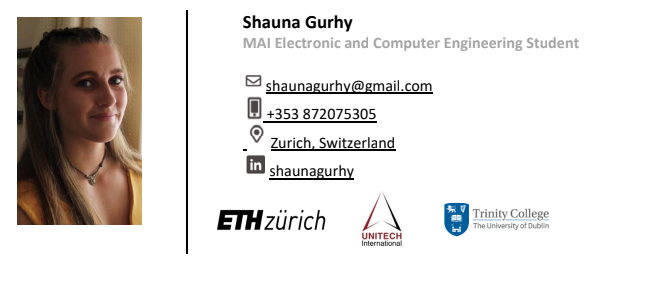

Shauna Gurhy Resume
Dublin, Ireland | +353 872075305 | shaunagurhy@gmail.com | LinkedIn: shaunagurhy
Personal Statement
Electronic and Computer Engineering final year MAI student at Trinity College Dublin, with a strong work ethic and a
passion for learning and problem-solving. Passionate about technology and sustainability with a particular interest in solar
electric. I have a broad range of extra-curricular interests which have helped me to develop qualities such as commitment,
determination and most importantly being a team-player. I have demonstrated initiative and leadership in both my work
and personal life.
Education
Management and Leadership Program | Unitech International | September 2021-2023
Three weeklong training programs to bridge the gap between the business and engineering world, including a group project
in collaboration with Roche about sustainable materials. An international exchange studying at ETH Zurich. An internship
with Truma Gerätetechnik GmbH & Co. KG, a Unitech Corporate Partner Company. see more
Electrical Engineering and Information Technology | ETH Zurich | September 2021-2022
Relevant modules undertaken:
- Solar Cells, Simulation of Photovoltaic Devices, Charge Transport in Energy Conversion and Storage Devices.
- International Business Management for Engineers, Corporate Sustainability, Alliance Advantage, work design
and organisational change. see more
Electronic and Computer Engineering Master | Trinity College Dublin | September 2018-2023
- Grade to date: First Class Honours
- Relevant modules undertaken to date:
- Computer Science – C, C++, Python, Java, React (programming languages), ARM assembly language, MatLab,
Verilog, object-orientated programming, Data structures and Algorithms, Machine Learning, Linux.
- Electronics - Circuit Theory and Digital Logic, Dynamic Circuits, transient analysis, phasor analysis, power,
signals and systems, Digital systems design, semiconductor physics, Digital Signal Processing, Cyber Physical
Systems.
- Physics – Introduction to the fundamentals of physics see more
Work Eperience
Anti-Doping Executive | Sport Ireland | October 2023-2024
IC Testing see more
Hardware Electrical Intern | Truma Gerätetechnik GmbH & Co. KG | March-August 2022
MPE Intern | Intel Ireland | June-September 2020
MPE Intern | Intel Ireland | June-September 2019
Sports Camp Leader | Coolmine Sports | Summer and Easter 2014-2018
Volunteer Work
National Canoe Polo Committee Squad Liaison | Canoeing Ireland | September 2019–2021
Trinity Kayak Club Committee Competitions Officer | May 2020–2021
National Canoe Polo Team Manager | Canoe Polo Ireland | Season 2022
Skills and Abilities
- Proficient in Microsoft Office platforms such as Word, Excel, and Power point.
- Programming - C, C++, C#, Python, Java, React, Matlab, ARM assembly language, Verilog, object orientated programming, data structures and algorithms, computer networks, machine learning, linux.
- Group Repository - Proficient in working with git and Azure DevOps as a group repository.
- Communication skills shown through my position as a sports camp leader, scout leader and Canoe polo coach for beginners
- Project Management - A strong leader as well as being a team player, familiar with supply chains, basic economics, accounting, and sustainability.
- Problem Solving
- Languages - English (Native), Irish, French (beginner)
- Customer Service – Communication, enthusiasm, delivery.
- Electrical engineering – Signal processing, digital circuits, digital circuit design and testing, power, storage devices.
- Full Drivers Licence
Awards and Achievements
Academic
Personal
